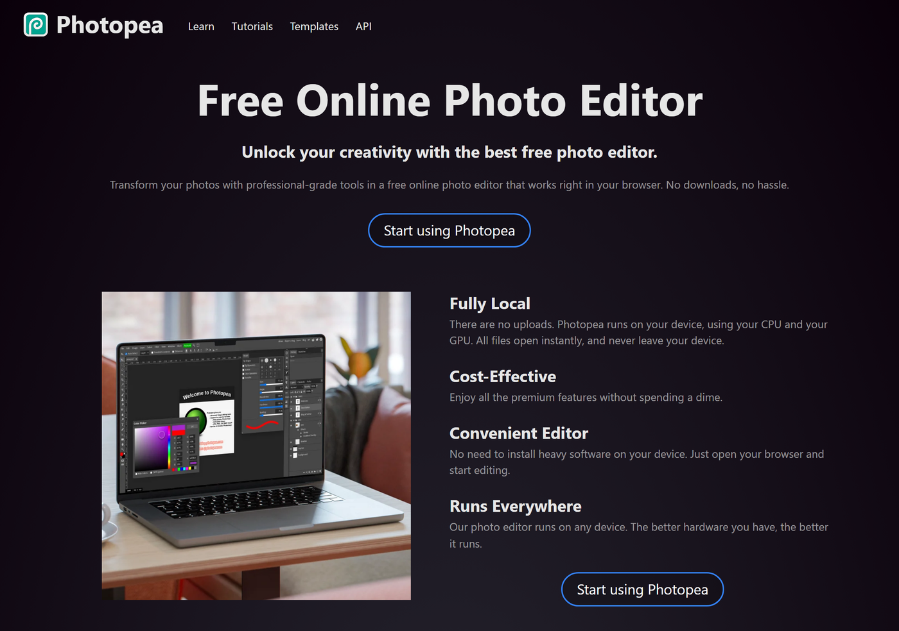
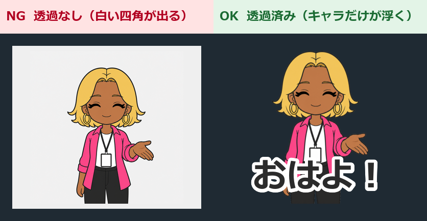
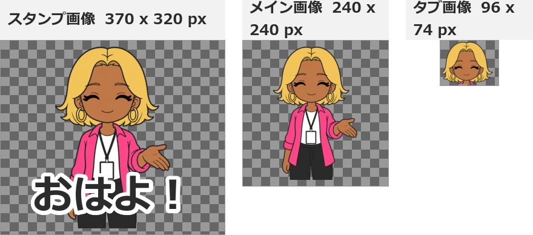

第6章 画像の加工
この章でわかること
- 画像を切り抜いて背景を透明にする手順
- 余白をどれくらい残すか
- リサイズとPNG保存のやり方
- 文字入れと、白フチ・黒フチの付け方
- スマートフォンで見え方を確認する方法
- ファイル名の統一ルール
- メイン画像とタブ画像の作り方
- 使えるツール5つの比較
なぜ加工が必要なのか
生成しただけの画像は、そのままでは申請できません。
理由は3つです。
- 背景が透明になっていない
- サイズが規定と違う
- セリフの文字が入っていない
つまり、加工は「作品を審査に通せる形にする工程」です。
ここを丁寧にやると、リジェクトが激減します。
私の経験では、リジェクトの原因は画像の仕様不備がいちばん多いです。
絵の内容ではなく、余白や透過で返ってきます。
加工の全体像
作業の流れはこうです。
生成画像（背景あり・文字なし）
↓ ① 切り抜き（背景を透明にする）
↓ ② 余白調整（端に接触させない）
↓ ③ リサイズ（規定サイズに合わせる）
↓ ④ 文字入れ（セリフを載せる）
↓ ⑤ フチ付け（読みやすくする）
↓ ⑥ PNG保存（透過を保持）
↓ ⑦ ファイル名を統一
↓ ⑧ スマートフォンで確認
完成（申請できる画像）
1枚あたり、慣れれば2〜3分です。
40枚で2時間ほど見ておくと安全です。
使えるツール5つ
まず、道具を決めます。
各サービスの機能や料金は変わる可能性があります。
最新の情報は、各公式サイトで確認してください。
1. Canva（キャンバ）
Webブラウザで使えるデザインツールです。
- 得意：文字入れ、メイン画像のレイアウト
- 背景透過：機能として提供されていますが、プランによって使えるかが異なります
- おすすめ度：文字入れ用として◎
パソコン操作に慣れていない人には、いちばん扱いやすいです。
2. ibisPaint（アイビスペイント）
スマートフォン・タブレット向けのお絵かきアプリです。
- 得意：手描きの修正、細かい切り抜き、フチ付け
- 背景透過：レイヤー機能で対応できます
- おすすめ度：スマートフォン中心の人に◎
指やタッチペンで細かい修正ができます。
3. Photopea（フォトピア）
ブラウザで動く画像編集ツールです。
- 得意：切り抜き、レイヤー操作、細かいサイズ指定
- 背景透過：レイヤーで自由にできます
- おすすめ度：無料で本格的に作業したい人に◎
操作画面がPhotoshopに近いので、慣れが必要です。
でも、インストール不要でブラウザだけで動きます。
4. LINEスタンプメーカー
LINE公式のスタンプ作成アプリです。
- 得意：スマートフォンだけでスタンプを完成させる
- 背景透過：切り抜き機能があります
- おすすめ度：パソコンを使わない人に○
アプリ経由で申請まで進める流れも用意されています。
利用できる機能や申請フローは変更される可能性があります。アプリ内の案内とLINE Creators Market公式ガイドラインを確認してください。
5. Python（パイソン）
プログラムで一括処理する方法です。
- 得意：40枚のリサイズ、リネーム、検証を一瞬で終わらせる
- 背景透過：単色背景なら自動化できます
- おすすめ度：40枚を扱うなら◎
第11章とこのリポジトリの scripts/ フォルダで、そのまま使えるスクリプトを用意しています。
プログラミング経験は不要です。コピーして実行するだけです。
おすすめの組み合わせ
私が実際に使っている組み合わせを書きます。
| 工程 | 使うもの |
|---|---|
| 切り抜き・透過 | Photopea または ibisPaint |
| 文字入れ・フチ付け | Canva または ibisPaint |
| リサイズ・リネーム・検証 | Python（scripts/ のスクリプト） |
| メイン画像のレイアウト | Canva |
| 最終確認 | スマートフォン実機 |

① 切り抜き（背景を透明にする）
いちばん重要な工程です。
方法A 自動の背景削除を使う
多くのツールに「背景削除」「背景を消す」というボタンがあります。
手順
- 画像を開く
- 「背景削除」を実行する
- 結果を拡大して確認する
- 髪の細い部分、指の先が欠けていないか見る
- 欠けていたら手で塗り足す
注意点
白い服のキャラクターでは、服が消えることがあります。
第5章で「背景を薄いグレーで生成する」とお伝えしたのは、これを防ぐためです。
方法B 被写体を選択して切り抜く
手順（Photopeaの場合）
- 画像を開く
- 選択ツールで、キャラクターの外側（背景）をクリックする
- 選択範囲を少し広げる（1〜2px）
- Deleteキーで削除する
- 市松模様（透明を表す模様）になったことを確認する
方法C 消しゴムで手作業
枚数が少ないときや、細かい部分だけ直すときに使います。
手順
- 拡大表示にする（200〜400%）
- 消しゴムツールを選ぶ
- 背景部分を消していく
- キャラクターの輪郭ぎりぎりまで消す
時間はかかりますが、確実です。
透過できたか確認する方法（重要）
見た目では絶対に判断できません。
確認手順
- 新しいレイヤーを作る
- そのレイヤーを黒または濃い青で塗りつぶす
- そのレイヤーを、キャラクターのレイヤーの下に移動する
- キャラクターの周りに白い部分が出ていないか見る
白い四角が出たら、透過できていません。
白いフチが細く残る場合は、選択範囲を1px内側に縮めてから削除し直します。

② 余白調整
キャラクターを画像の端まで大きく描くと、審査で指摘されることがあります。
なぜ余白が必要なのか
トーク画面でスタンプが表示されるとき、周囲に少し空間があるほうが見やすいです。
そして、端に接触していると、環境によって切れて見えることがあります。
余白の目安
公式ガイドラインに数値が示されています。
2026年7月30日時点の記載では、次のとおりです。
トリミングされた画像の外枠とコンテンツの間には10pxぐらいの余白が必要です。 画像をつくるときは上下左右のバランスに注意してください。
つまり、370×320のスタンプ画像なら、上下左右に10px程度です。
実際の作業では、こう考えると安全です。
- キャラクターの高さを、画像の高さの90%程度に収める
- 上下左右に10px以上の空間を残す
- 手や足、効果線が画面外に出ないようにする
- 文字も余白の内側に収める
余白の推奨値は変更される可能性があります。申請前にLINE Creators Market公式の最新ガイドラインを確認してください。
余白の作り方
手順
- キャラクターのレイヤーを選ぶ
- 全体を少し縮小する（90〜95%程度）
- 中央に配置する
- 上下左右の余白を目で確認する
文字を入れる場合は、文字も余白の内側に収めます。
③ リサイズ
規定のサイズに合わせます。
サイズ（2026年7月30日時点の公式記載）
| 種類 | サイズ（px） | 必要数 |
|---|---|---|
| スタンプ画像 | 横370 × 縦320（最大） | 8/16/24/32/40個 |
| メイン画像 | 240 × 240 | 1個 |
| タブ画像 | 96 × 74 | 1個 |
あわせて、次の条件も満たす必要があります。
- 縦横のピクセル数は偶数
- 解像度は72dpi以上
- カラーモードはRGB
- 1個あたり1MB以下
- ZIPでまとめる場合は60MB以下
サイズの数値は変更される可能性があります。申請前に、LINE Creators Market公式の最新ガイドラインを確認してください。
リサイズの注意点
縦横比を保ってください。
比率を無視して伸ばすと、キャラクターが太ったり細長くなったりします。
手動でのリサイズ手順（Photopeaの場合）
- メニューから「イメージ」→「画像サイズ」を開く
- 「縦横比を固定」にチェックを入れる
- 長い辺の数値を入力する
- 適用する
- 規定サイズのキャンバスを新規作成する
- リサイズした画像を貼り付け、中央に配置する
一括リサイズ（Pythonを使う場合）
40枚を手動でやると時間がかかります。
第11章の scripts/validate_images.py でサイズをチェックし、必要ならリサイズ処理を追加します。
縮小はきれいにできますが、拡大は画質が落ちます。
だから、生成時は大きめのサイズで出しておくのが正解です。
④ PNG保存
保存手順
- メニューから「ファイル」→「書き出し」または「エクスポート」を選ぶ
- 形式で PNG を選ぶ
- 「透明部分を保持」のような設定があればオンにする
- 保存する
やってはいけないこと
拡張子だけを変えること。
× stamp_001.jpg のファイル名を stamp_001.png に変える
○ 編集ソフトで「PNG形式で書き出し」を実行する
前者は中身がJPEGのままです。
審査で弾かれます。
確認方法
第11章の scripts/validate_images.py を実行すると、中身が本当にPNGかどうかを判定できます。
これが一番確実です。
⑤ 文字入れ
セリフを画像に載せます。
文字入れの手順
- 加工済みの透過PNGを開く
- テキストツールを選ぶ
- セリフを入力する
- フォントを選ぶ
- サイズを調整する
- 位置を決める
- フチを付ける（次のセクション）
- PNGで保存する
フォントの選び方
太いフォントを選んでください。
細いフォントは、縮小すると消えます。
| フォントの種類 | 向き |
|---|---|
| 太いゴシック体 | ◎ 最適 |
| 丸ゴシック体 | ◎ かわいい系に合う |
| 明朝体 | △ 細い部分が消える |
| 筆記体・手書き風 | △ 読みにくいことがある |
フォントの商用利用条件も必ず確認してください。
無料フォントでも、商用利用が禁止されているものがあります。
「商用利用可」「再配布不可でも使用は可」などの条件を、配布元で確認します。
文字サイズの目安
画像の中で、セリフが占める高さは全体の20〜30%を目安にします。
小さすぎると読めません。
大きすぎるとキャラクターが隠れます。
文字の位置
3パターンあります。
| 位置 | 向いている場面 |
|---|---|
| 上（頭の上） | キャラクターの全身を見せたいとき |
| 下（足元） | 顔を大きく見せたいとき |
| 横（左右） | 横向きのポーズのとき |
40枚で位置を統一する必要はありません。
キャラクターが隠れない位置に置くのが優先です。
ただし、フォント・文字サイズ・フチの色は統一します。
文字を統一するコツ
1枚目で完成した文字設定を、テンプレートとして保存します。
Canvaなら、複製して文字だけ差し替えられます。
これで40枚が一気に進みます。
⑥ 白フチと黒フチ
これは知らない人が多い、効果の大きいテクニックです。
なぜフチが必要なのか
LINEのトーク背景は、人によって違います。
- 白っぽい背景
- 黒っぽい背景（ダークモード）
- 写真の背景
- 濃い色のテーマ
黒い文字を白背景で見ると読めます。
でも、黒い背景では消えます。
解決策：文字に2重のフチを付ける
これが定番の作りです。
文字の中身：白
1本目のフチ：黒（細め）
2本目のフチ：白（太め）
または、逆でも構いません。
文字の中身：黒
1本目のフチ：白（太め）
こうすると、どんな背景でも読めます。
キャラクター本体にも白フチを付ける
これは効果が大きいです。
キャラクターの輪郭の外側に、白い縁を2〜4pxほど付けます。
すると、暗い背景でもキャラクターがはっきり浮きます。
手順（Photopeaの場合）
- キャラクターのレイヤーを選ぶ
- レイヤースタイルを開く
- 「境界線」または「ストローク」を選ぶ
- 色を白にする
- 太さを2〜4pxにする
- 位置を「外側」にする
- 適用する
手順（ibisPaintの場合）
レイヤーメニューの「フチ」または「縁取り」機能を使います。
実例：ビジネス敬語スタンプで学んだこと
ビジネス敬語スタンプを作ったとき、最初は文字にフチを付けていませんでした。
黒い文字だけです。
自分のスマートフォンで確認したときは読めました。
でも、ダークモードで使っている人には見えづらい状態でした。
対策として、全枚数に白フチを追加しました。
敬語系は文字が主役なので、フチは必須です。

⑦ 可読性の確認
パソコンの画面では、必ず「読める」と感じます。
でも、実際に使われるのはスマートフォンです。
確認方法1 縮小して見る
パソコン上で、画像を実際の表示サイズくらいまで縮小します。
目安として、画面上で1.5〜2cm四方くらいの大きさです。
その状態で読めるかを見ます。
確認方法2 スマートフォンに送る
これが本番の確認です。
手順
- 完成した画像を、自分だけのLINEグループに送る - LINEで自分1人のグループを作れます（「自分専用メモ」として使えます）
- スマートフォンでそのトークを開く
- 画像をタップせず、トーク上のサイズで見る
- 読めるか確認する
- トーク背景を暗い色に変えて、もう一度見る
トーク背景の変更手順
LINEの設定から「トーク」→「背景デザイン」で変更できます。
黒っぽい背景に変えて確認してください。
確認方法3 少し離れて見る
スマートフォンを腕の長さくらい離して見ます。
読めなければ、文字が小さすぎます。
確認するポイント
- セリフが読める
- 表情がわかる
- キャラクターが誰かわかる
- 明るい背景で見える
- 暗い背景で見える
- 文字が画像の端で切れていない
- 色が薄すぎない

⑧ ファイル名の統一
これを軽く見ると、あとで必ず混乱します。
統一ルール
stamp_001.png
stamp_002.png
stamp_003.png
...
stamp_040.png
main.png （メイン画像）
tab.png （タブ画像）
なぜ3桁の連番にするのか
理由は2つです。
理由1 並び順が崩れない
stamp_1.png と stamp_10.png があると、パソコンは次の順に並べます。
stamp_1.png
stamp_10.png
stamp_2.png
3桁にすると、正しく並びます。
stamp_001.png
stamp_002.png
stamp_010.png
理由2 CSVと対応が取れる
第4章のCSVの number 列と filename 列が一致します。
これで「何番のセリフがどのファイルか」が迷わなくなります。
日本語のファイル名を避ける理由
ありがとう.png のような名前は避けます。
- 環境によって文字化けする
- スクリプトで処理しにくい
- アップロード時に順番が崩れる
リネームの自動化
40枚を手で名前変更するのは大変です。
第11章の scripts/rename_images.py を使うと、一括で stamp_001.png 形式に変換できます。
元ファイルは上書きせず、output フォルダにコピーする方式にしています。
⑨ メイン画像の作り方
ストアの表紙になる画像です。
参考サイズ：240 × 240 px（要確認）
作り方の手順
- スタンプの中から、いちばん表情が良い1枚を選ぶ
- その画像を複製する（元の40枚は触らない）
- 240×240の正方形キャンバスを新規作成する
- キャラクターを配置する（顔が大きく見えるように）
- スタンプのテーマがわかる文字を入れる（任意）
- 背景を透過にする
- PNGで保存する（ファイル名：
main.png）
メイン画像で意識すること
3つだけです。
1. 顔が大きい
一覧で小さく表示されます。
全身よりも、顔が大きいほうが目に入ります。
2. 何のスタンプかわかる
キャラクターだけだと、テーマが伝わりません。
短い文字を入れると、伝わりやすくなります。
例：「AIコンサル アイナ」
ただし、文字を詰め込みすぎないでください。
3. 他の作品に埋もれない
一覧に並んだとき、色が薄いと消えます。
アクセントカラーを使って、目に留まるようにします。
「アイナ」ならネオンピンク（#FF4FA3）です。
注意
メイン画像は、スタンプ画像とサイズが違います。
40枚のうちの1枚を、そのまま流用できません。
必ず作り直してください。
⑩ タブ画像の作り方
トーク画面下部のタブに出る、小さなアイコンです。
参考サイズ：96 × 74 px（要確認）
作り方の手順
- キャラクターの顔がよく見える1枚を選ぶ
- 顔だけを切り出す
- 96×74のキャンバスを新規作成する
- 顔を中央に配置する（横長なので、顔を少し小さめに）
- 背景を透過にする
- PNGで保存する（ファイル名：
tab.png）
タブ画像のコツ
とにかく小さいです。
だから、こうします。
- 文字は入れない（読めません）
- 顔だけにする（全身は潰れます）
- 線を太くする
- 色をはっきりさせる
よくある間違い
メイン画像をそのまま縮小して使うと、細部が潰れます。
そして、96×74は横長です。
正方形の画像を入れると、余白が大きくなります。
顔を少し横に広めに切り出すと、収まりが良くなります。

そのまま使えるプロンプト
画像加工そのものはAIにできませんが、判断の整理には使えます。
プロンプト1 可読性の問題を整理する
私はLINEスタンプの画像を加工しています。
以下の状況について、可読性を上げる具体策を優先度順に5つ出してください。
【状況】
- セリフの文字数：
- 文字色：
- 文字にフチ：あり／なし
- キャラクターの色の濃さ：
- スマートフォンで確認した結果：
【出力の条件】
- 画像編集ソフトでの具体的な操作として書く
- 「〜を〜pxにする」のように数値で書く
- 効果が大きい順に並べる
- 作業時間の目安も1行で書く
プロンプト2 加工手順のチェックリストを作る
私が使う画像編集ツールは「（ツール名）」です。
このツールで、以下の作業を行う手順を、
初心者向けに1ステップずつ書いてください。
【作業内容】
1. 背景を透明にする
2. キャラクターの外側に白い縁を3px付ける
3. 文字を入れて、白フチと黒フチを2重に付ける
4. 370×320px以内にリサイズする
5. 透過を保持したままPNGで書き出す
【出力の条件】
- メニュー名やボタン名を具体的に書く
- 各ステップに「確認すること」を1行添える
- ツールのバージョンによって名称が違う可能性があることを明記する
- 数値は私が公式ガイドラインで確認する前提で書く
よくある失敗
失敗1 透過したつもりで、白く塗りつぶしていた
見た目では気づけません。
対策：黒いレイヤーを下に置いて確認する。
失敗2 白フチが残っている
暗い背景で輪郭が光ります。
対策：選択範囲を1px内側に縮めてから削除する。
失敗3 JPEGをリネームしてPNGにした
中身は変わりません。
対策：編集ソフトの「PNG書き出し」を使う。検証スクリプトで確認する。
失敗4 キャラクターを端まで大きくした
余白がなく、審査で指摘されることがあります。
対策：全体を90〜95%に縮小して中央配置する。
失敗5 縦横比を無視してリサイズした
キャラクターが伸びます。
対策：「縦横比を固定」にチェックを入れる。
失敗6 細いフォントを使った
縮小すると消えます。
対策：太いゴシック体か丸ゴシック体を使う。
失敗7 フォントの商用利用条件を確認しなかった
あとで使えないことがわかります。
対策：配布元で条件を確認する。
失敗8 文字にフチを付けなかった
暗い背景で読めません。
対策：白フチ＋黒フチの2重にする。
失敗9 パソコンだけで確認を終えた
スマートフォンで見たら小さすぎた、が起きます。
対策：自分専用のLINEグループに送って実機確認する。
失敗10 メイン画像とタブ画像を作り忘れた
申請直前に気づきます。
対策：作業リストに最初から入れる。42枚として数える。
失敗11 ファイル名がバラバラ
アップロード順が崩れます。
対策：stamp_001.png 形式に統一する。スクリプトで一括リネームする。
失敗12 元画像を上書きした
やり直しができません。
対策：加工は必ず複製に対して行う。元画像は別フォルダに保管する。
この章のチェックリスト
全枚数の共通確認
- 背景が透明になっている（黒背景で確認した）
- 白いフチが残っていない
- キャラクターが画像の端に接触していない
- サイズが規定内（公式ガイドラインで確認した数値）
- 縦横のピクセル数が偶数
- PNGで保存されている（検証スクリプトで確認した）
- ファイル名が
stamp_001.png形式で連番になっている - 元画像を別フォルダに保管している
文字の確認
- フォントが太い
- フォントの商用利用条件を確認した
- 40枚でフォントが統一されている
- 文字にフチが付いている
- 文字が画像の端で切れていない
- 文字がキャラクターの顔を隠していない
メイン画像・タブ画像
main.pngを作った（規定サイズ）tab.pngを作った（規定サイズ）- タブ画像は顔だけにした
- タブ画像に文字を入れていない
- どちらも透過されている
実機確認
- スマートフォンの明るい背景で確認した
- スマートフォンの暗い背景で確認した
- 腕の長さ離して読めた
章のまとめ
- 加工の流れは、切り抜き→余白→リサイズ→文字→フチ→PNG→リネーム→実機確認
- 透過の確認は、黒いレイヤーを下に置いて行う
- 白い服のキャラは、薄いグレー背景で生成すると切り抜きやすい
- 文字は太いフォント。白フチ＋黒フチで、どの背景でも読める形にする
- ファイル名は
stamp_001.png形式の3桁連番 - メイン画像とタブ画像は別サイズ。流用できない
- 最終確認はスマートフォン実機。明るい背景と暗い背景の両方
次の章では、LINE Creators Marketへの登録と申請に進みます。
画像がそろっていれば、作業自体は1時間かかりません。